Reviews · Zigbee remote
SONOFF SNZB-01M "Orb" 4-in-1 Smart Scene Button: hands-on ZHA review, direct bindings and the first press that doesn't work
First published on the Home Assistant community forum. Questions and comments are welcome there.
TL;DR
What I liked:
- Four buttons, each with single, double, triple and long press: 16 actions from one £17 remote.
- Since firmware 1.1.0, all four buttons support direct Zigbee binding for On/Off and dimming, to single lights or to groups. The remote talks straight to the lights, with no Home Assistant needed.
- Bound lights keep working with Home Assistant stopped and with the Zigbee coordinator offline.
- Native ZHA support, battery reporting, and bindings that survive a battery change.
- Excellent value: very few remotes at this price do direct binding properly.
The biggest disappointment: a single press doesn't toggle. Each button remembers whether it last sent On or Off and sends the opposite, so once a light has been switched any other way, the next press does nothing.
Verdict: 3/5. A very capable, great-value remote, held back by one firmware decision. A Toggle option would make it close to an easy recommendation for multi-way setups (4/5 if the toggle issue is solved).
I've been living with three SONOFF SNZB-01M "Orb" remotes for a while: one in the lounge and two in bedrooms. They're all part of multi-way lighting setups, where the same lights are also controlled by other buttons, other switches and the Home Assistant app.
For me, the most important thing a Zigbee remote can do is direct binding. The remote talks straight to the light, so it keeps working even if Home Assistant is restarting, the server is down or the coordinator is unplugged. A light switch that depends on a server isn't really a light switch. I'm determined to have lights that work without relying on the coordinator or Home Assistant, and that's the lens for this whole review.
This review also brings together two of my own projects:
- ZHA Bindings Manager, which I used to set up, inspect and test every binding in this review, and to see exactly what the remote sends.
- Zigbee Capabilities Database, which records what devices actually expose. I submitted a full scan of the Orb as part of this review.
1. Product and installation
Tested: SONOFF SNZB-01M "Orb", firmware 1.1.0. Around £17 on Amazon at the time of writing. Product page.
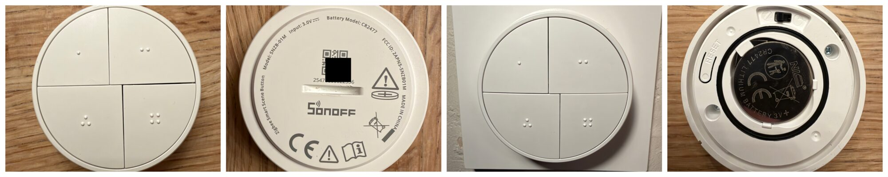
The Orb is a round, four-button remote. The design is pleasant, though not premium, which is fair at £17. I was originally looking for a battery-powered wall switch or rocker that does direct binding properly, and possibly dimming, but couldn't find one that does both. The Orb was the closest fit: four buttons, direct binding, and less than half the price of the closest equivalent I found, the Philips Hue Tap Dial Switch (£36–45 on Amazon at the time of writing). Two of mine sit loose and one is mounted on a wall.
Inside, it runs on a CR2477 coin cell, behind a sealed cover that you open with a coin. There's a reset button, and a small mode switch that chooses between Zigbee mode and SONOFF's eWeLink-Remote mode. Make sure it's set to Zigbee before pairing with ZHA.
Pairing was simple and worked exactly as SONOFF describes. In Zigbee mode, the Orb starts in pairing mode the first time it's powered up, with its indicator flashing slowly. If it's missed, a 5-second press on the reset button starts pairing again. ZHA recognised it first time, with all four buttons, and it uses ZHA's built-in SNZB-01M quirk. Firmware updates through ZHA are just as easy.
2. At a glance: verified findings
The following reflects what I actually tested, rather than a reproduction of the specification sheet.
| Area | Finding | Status |
|---|---|---|
| ZHA pairing | Recognised, with ZHA's built-in quirk for the SNZB-01M | Passed |
| HA actions | 16 triggers: single, double, triple and long press on each of the 4 buttons | Passed |
| Direct binding, all buttons | On/Off and Level Control from all four buttons (firmware 1.1.0) | Passed |
| Group binding | One button controls a ZHA group of two dimmers | Passed |
| Home Assistant stopped | Bound lights still switch and dim | Passed |
| Coordinator offline | Bound lights still switch and dim | Passed |
| Dimming | Long press dims smoothly; release stops; stays in step | Passed |
| Single-press behaviour | Sends On or Off from its own memory, not Toggle | Issue found |
| Setting to change it | None found on any button | Not available |
| Battery | Percentage reported; bindings survive a battery change | Passed |
Environment: ZHA with a SONOFF Dongle-M coordinator. SONOFF SNZB-01M on firmware 1.1.0 (OTA file version 0x00001100), with ZHA's built-in quirk.
3. Direct Zigbee binding: four buttons, a group, and no Home Assistant needed
With ZHA Bindings Manager, I bound all four buttons of one Orb to the lights in my bedroom, each for On/Off and Level Control. I dragged each button onto its light on the Map tab, which opens the binding in the Advanced tab ready to confirm. Each binding worked first time and took seconds, even though the Orb is a sleeping battery device. My first Orb pre-dates ZHA Bindings Manager, and binding that one by hand with zha-toolkit service calls was a very different, much fiddlier experience. I only have two dimmers in that room, so buttons 3 and 4 share a dimmer with button 1. Every button switched and dimmed its light.
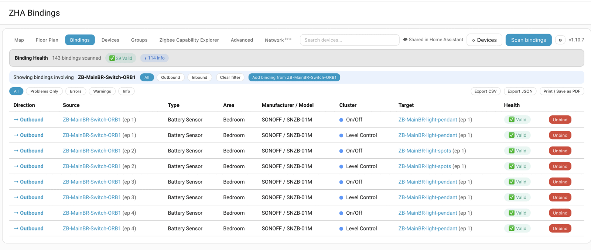
Next, I used ZHA Bindings Manager's guided setup to bind button 1 to a ZHA group containing both bedroom dimmers. It created the group, bound the button, and tested it. Both lights responded together, switching and dimming.
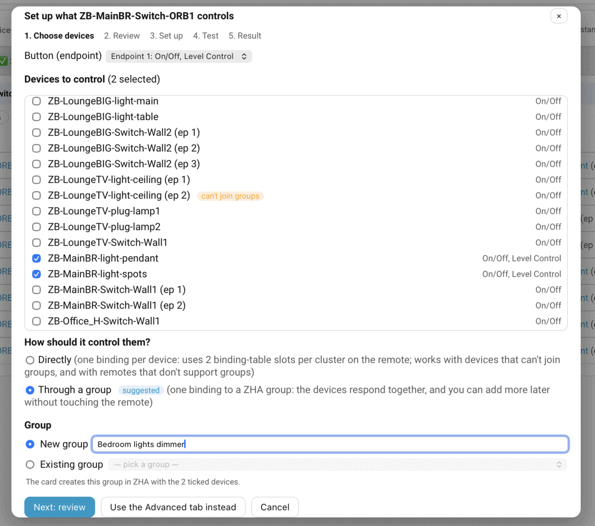
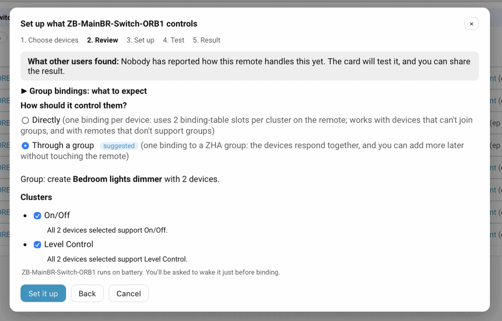
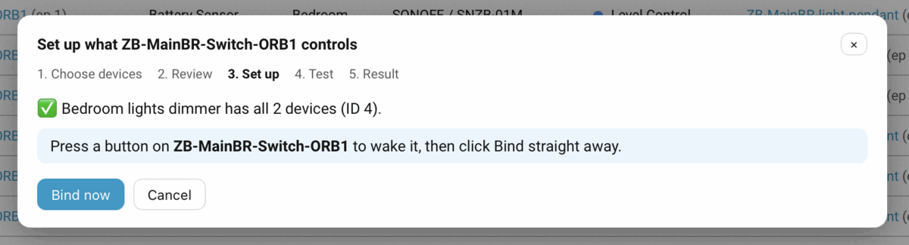
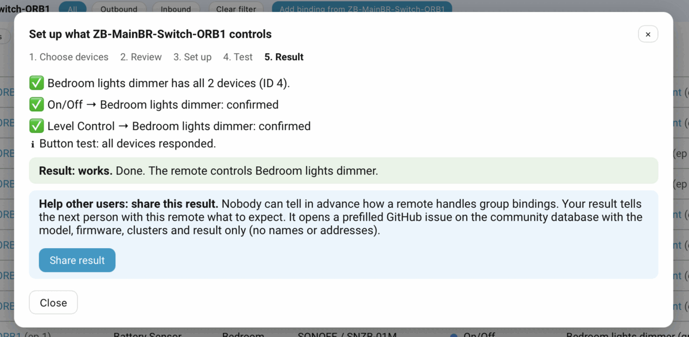
To prove this is real device-to-device control, I tested it with Home Assistant stopped, and again with the Zigbee coordinator offline. Switching and dimming kept working both times.
Long press dims smoothly in either direction, and releasing the button stops it. Dimming stays in step even when the light has been dimmed some other way first. Remember that, because it matters in section 5.
This is how I use my three Orbs day to day:
- Bedroom 1: buttons 1 and 2 switch and dim two lights, by direct binding only.
- Lounge: buttons 1 and 2 are bound to SONOFF lights. Buttons 3 and 4 control non-Zigbee plugs through Home Assistant, and a triple press on button 4 turns off every light in the room.
- Bedroom 2: buttons 1–3 switch three Zigbee lights by direct binding. Button 4 runs an automation: if any light in the room is on, it turns them all off; if all are off, it turns them all on.
That mix is where the Orb shines. Single presses work directly without Home Assistant, and the multi-press actions add extra automations on top.
4. What my Zigbee capabilities scan revealed
I scanned all four buttons with ZHA Bindings Manager and submitted the results to my Zigbee Capabilities Database. It's the first record of the Orb with every button scanned.
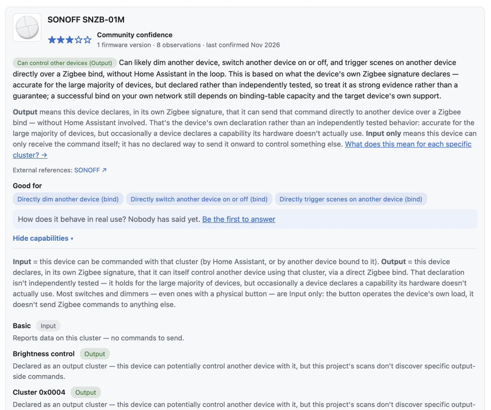
The database lists it as able to switch, dim and trigger scenes on other devices directly. That's based on what the remote declares about itself, which is strong evidence but not a guarantee. This review adds the tested side: switching and dimming through bindings work on all four buttons, but a single press sends On or Off rather than Toggle.
I've also added a "How does it behave" report to the database entry, so the tested results sit alongside the scan for anyone checking the Orb: direct control works, a press sends On and Off (not Toggle), no setting is needed or available, hold-to-dim works, and bindings survive a battery change.
| Button (endpoint) | Sends (binding) | Other clusters |
|---|---|---|
| 1 | On/Off, Level Control, Scenes, Groups | Basic, battery, Identify, Poll Control, SONOFF button cluster |
| 2–4 | On/Off, Level Control | Basic, SONOFF button cluster |
The firmware history matters here. SONOFF's release notes for firmware 1.1.0 say it added the On/Off cluster to buttons 2, 3 and 4. Before that, only button 1 could switch a light through a binding. That's a genuinely useful update. One thing to know: ZHA doesn't re-read a device's buttons after a firmware update, so if your Orb was paired on older firmware, re-pair it after updating before binding buttons 2–4.
I also checked every cluster on every button, including SONOFF's own (using SONOFF's manufacturer code), for any setting that changes how a press behaves. There isn't one. That brings me to the main finding.
5. The first press that doesn't work
From the start, I've had one niggle with the Orbs: the first press often does nothing, and the second press always works. It still happens today. My family has noticed it too, and some of them have given up on the Orbs, calling the buttons "buggy". I assumed what most people would assume about a battery remote: that it was asleep, slow to wake up, or occasionally losing presses.
So I tested it properly. I left an Orb untouched for a few hours, enabled ZHA's debug logging, and pressed a button once. The light didn't respond, but the log showed that the Orb had woken up straight away and sent its press. The dimmer had even received a command and replied within two seconds.
The Orb wasn't asleep, and it wasn't losing presses. It was sending the wrong command.
To confirm it, I bound one button to the Zigbee coordinator as well, so Home Assistant could see exactly what the remote sends. Three presses in a row produced Off, On, Off. The Orb never sends Toggle, the Zigbee command made exactly for this. Instead, each button remembers whether it last sent On or Off, and sends the opposite.
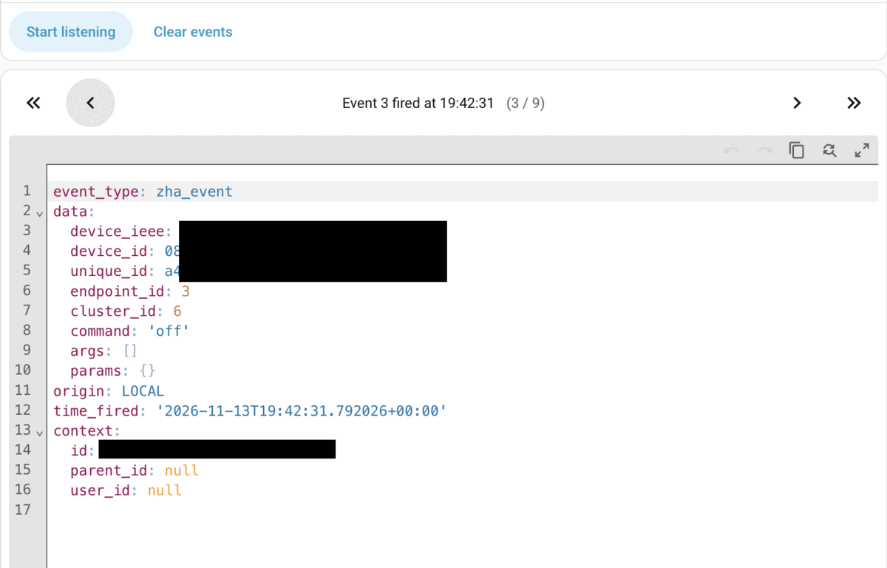
off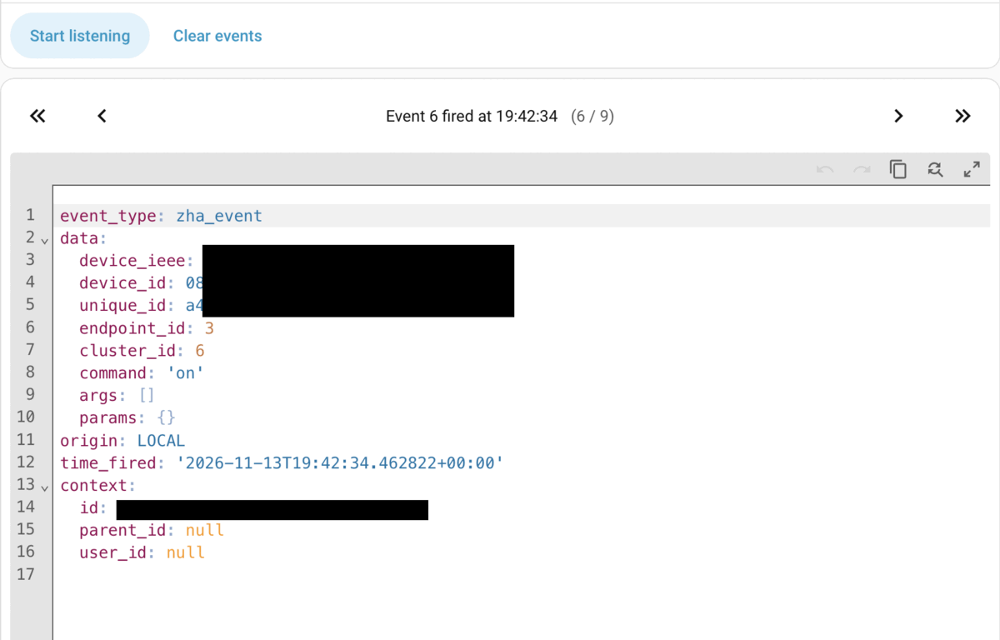
on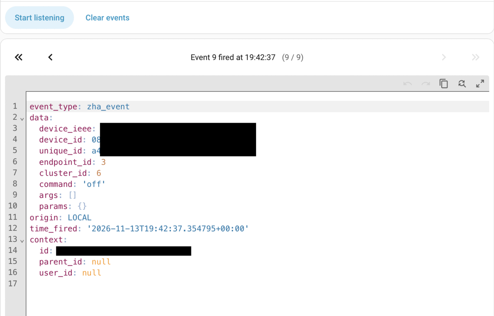
offThat works perfectly as long as the Orb is the only thing controlling the light. Once the light has been switched any other way (another switch, the Home Assistant app, an automation, another remote, or even another button on the same Orb), the button's memory is out of step. Its next press tells a light that's already off to switch off, so nothing happens. The second press sends On, and everything appears to work again, which is exactly why it felt like a slow or missed first press.
The same-Orb case is the easiest to reproduce. With buttons 1 and 3 bound to the same light:
- Press button 1: the light turns on.
- Press button 3: the light turns off.
- Press button 1: nothing happens, because button 1 still thinks the light is on, so it sends Off.
- Press button 1 again: the light turns on.
In a multi-way setup like mine, where every light has several controls, this happens all the time.
Two details are worth adding:
- Dimming doesn't have this problem (section 3), so SONOFF clearly handles it properly in one place.
- SONOFF's own description says a single press "toggles", so this is a gap between what's documented and what the firmware does.
I couldn't find a workaround that doesn't rely on Home Assistant. There's no setting on the remote, and Zigbee has no setting on the light side either. It needs a firmware change.
6. Home Assistant: 16 actions per remote
With ZHA's built-in quirk, each Orb offers these device triggers in Home Assistant automations:
| Button | Triggers |
|---|---|
| First button | pressed · double clicked · triple clicked · continuously pressed |
| Second button | pressed · double clicked · triple clicked · continuously pressed |
| Third button | pressed · double clicked · triple clicked · continuously pressed |
| Fourth button | pressed · double clicked · triple clicked · continuously pressed |
That's 16 button actions per remote. There are also device triggers for battery level changes, the device going offline, and firmware updates.
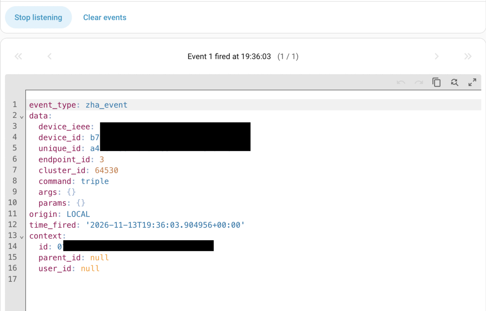
triple event from button 3- A long press arrives in Home Assistant as a single "continuously pressed" (hold) event, with no separate "released" event. Smooth hold-to-dim worked well through the direct binding. I didn't try building the same in a Home Assistant automation.
- In everyday use the Orb feels a little sluggish compared with my IKEA RODRET. In my logs, the first press after a long idle took about 1.7 seconds to reach the light, against a fraction of a second for later presses. It's noticeable, but every press arrived.
7. Battery
- Home Assistant shows the battery percentage.
- Taking the battery out and putting it back didn't affect the bindings: everything worked straight away afterwards.
- I haven't run the Orbs long enough to comment on battery life.
8. Zigbee end device
The Orb is a sleepy end device: it wakes when pressed, and otherwise checks in periodically. It talks through a nearby router, its "parent". The device panel in ZHA Bindings Manager shows which one, and how good the link is, alongside everything else about the remote in one place: what it controls, whether its bindings read reliably, its entry in the Zigbee Capabilities Database, how many messages it sends to Home Assistant, and a nightly check that none of its bindings have been lost.
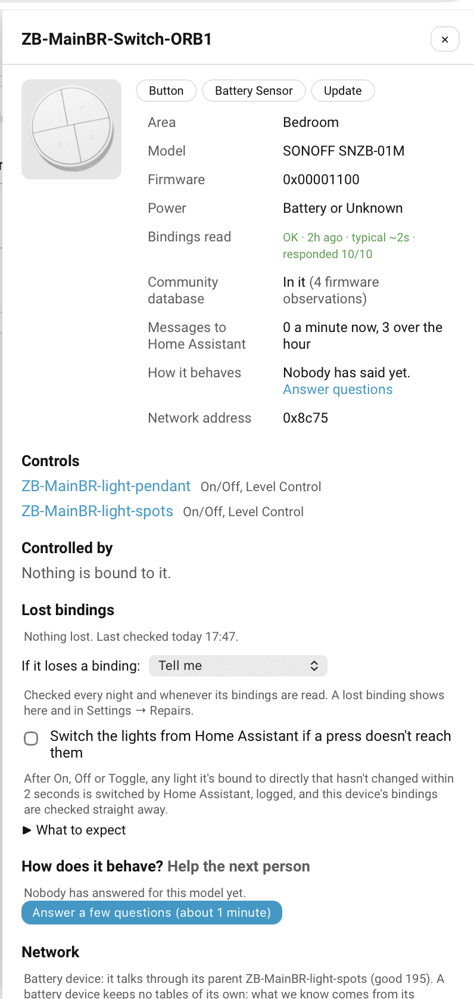
Moving it around the house is no problem: during testing I took the bedroom Orb to the lounge, and it carried on working there without any intervention. I didn't test what happens when its parent router disappears.
9. What I'd improve
- Make single press toggle, or make it configurable. This is the main one. Ideally, add a per-button option through Zigbee's standard On/Off Switch Configuration cluster, with Toggle as a choice. Toggle has its own trade-off (several bound lights can end up mismatched), which is why an option beats a fixed change. Either way, it would fix the "first press doesn't work" experience for anyone using the Orb alongside other switches.
- Commands for double and triple presses. Optional binding commands for multi-presses (for example, a scene or "all off") would make the Orb even more useful without Home Assistant. It's a nice-to-have rather than a complaint.
- A little more responsiveness. It's slightly slower to react than the best remotes I've used.
- Document the behaviour. If On/Off stays the design, say so clearly, rather than describing it as a toggle.
10. Verdict
The Orb gets a lot right. Four buttons, 16 actions in Home Assistant, direct binding on every button since firmware 1.1.0, group binding, and lights that keep working with Home Assistant and the coordinator offline. All for around £17, in a space where very few remotes do direct binding properly. And with the right tools, setting the bindings up takes seconds. Among the alternatives I've used, an Aqara remote I own only binds from its first button, and the IKEA RODRET, which is excellent and instant, controls just one light or group: its two buttons are on and off, with dimming on a long press.
But the single-press behaviour lets it down exactly where direct binding matters most: in a real multi-way setup. Once anything else touches the light, the next Orb press does nothing, and in my house that's been enough to put some of my family off using them.
Would I buy more? I already have several, and yes, I'd still recommend it to anyone who wants direct binding on a budget, as long as they know about the toggle behaviour. 4/5. It's a capable remote with genuinely useful direct binding, at a price that's hard to argue with. If SONOFF adds a Toggle option, it would be a huge improvement for anyone who values direct binding.
None of this changes my view of SONOFF as one of the best-value Zigbee brands around. The fix is small, SONOFF has already shown with firmware 1.1.0 that it improves the Orb after launch, and I'll be sharing these findings with them, asking for Toggle or, better still, a setting to choose between Toggle and On/Off.
If you use the Orb with ZHA or Zigbee2MQTT, I'd be interested to compare notes, in the forum thread or at lab@solgaard.uk.
Projects and further reading
- SONOFF SNZB-01M product page
- ZHA Bindings Manager on GitHub (Home Assistant integration, available in HACS)
- Zigbee Capabilities Database: SONOFF SNZB-01M